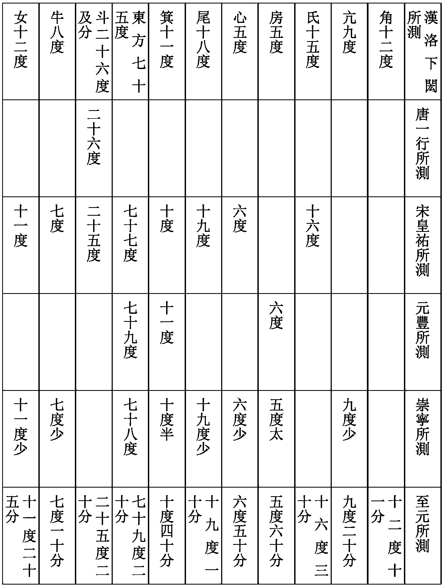
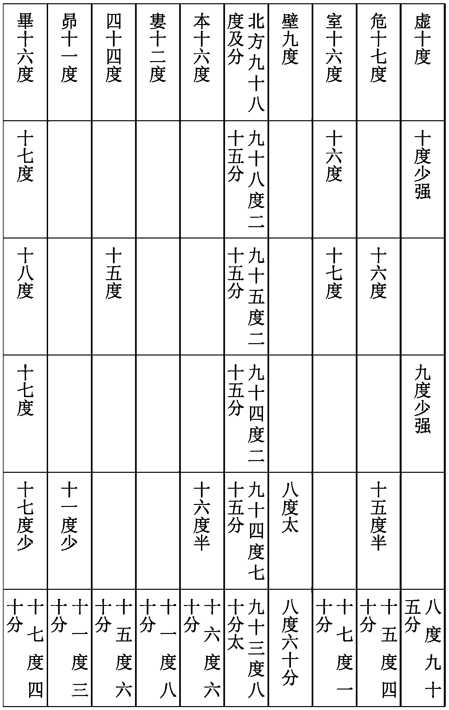
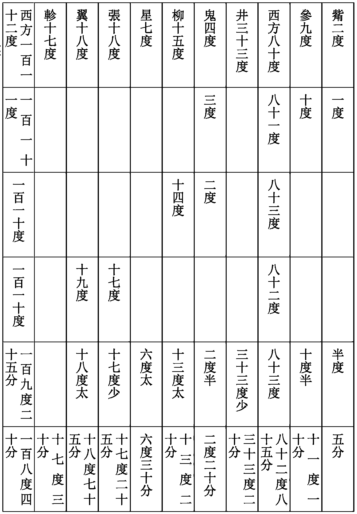

曆志五
授時曆議上
驗氣
天道運行，如環無端，治曆者必就陰消陽息之際，以爲立法之始。陰陽消息之機，何從而見之？惟候其日晷進退，則其機將無所遁。候之之法，不過植表測景，以究其氣至之始。智作能述，前代諸人爲法略備。苟能精思密索，心與理會，則前人述作之外，未必無所增益。
舊法擇地平衍，設水準繩墨，植表其中，以度其中晷。然表短促，尺寸之下所爲分秒大、半、少之數，未易分别。表長，則分寸稍長，所不便者，景虚而淡，難得實景。前人欲就虚景之中改求真實，或設望筩，或置小表，或以木爲規，皆取表端日光下徹圭面。今以銅爲表，高三十六尺，端挾以二龍，舉一横梁，下至圭面，共四十尺，是爲八尺之表五。圭表刻爲尺寸，舊寸一，今申而爲五，釐毫差易分别。
創爲景符，以取實景。其制以銅葉，博二寸，長加博之二，中穿一竅，若針芥然。以方框爲趺，一端設爲機軸，令可開闔，榰其一端，使其勢斜倚，北高南下，往來遷就於虚景之中，竅達日光，僅如米許，隱然見横梁於其中。舊法以表端測晷，所得者日體上邊之景，今以横梁取之，實得中景，不容有毫末之差。
地中八尺表景，冬至長一丈三尺有奇，夏至尺有五寸。今京師長表，冬至之景，七丈九尺八寸有奇，在八尺表則一丈五尺九寸六分；夏至之景，一丈一尺七寸有奇，在八尺表則二尺三寸四分。雖晷景長短所在不同，而其景長爲冬至，景短爲夏至，則一也。惟是氣至時刻考求不易。蓋至日氣正，則一歲氣節從而正矣。劉宋祖冲之嘗取至前後二十三四日間晷景，折取其中，定爲冬至，且以日差比課，推定時刻。宋皇祐間，周琮即取立冬、立春二日之景，以爲去至既遠，日差頗多，易爲推考。《紀元》以後諸曆，爲法加詳，大抵不出冲之之法。新曆積日累月，實測中晷，自遠日以及近日，取前後日率相埒者，參考同異，初非偏取一二日之景，以取數多者爲定，實減《大明曆》一十九刻二十分。仍以累歲實測中晷日差分寸，定擬二至時刻於後。
推至元十四年丁丑歲冬至
其年十一月十四日己亥，景長七丈九尺四寸八分五釐五毫。至二十一日丙午，景長七丈九尺五寸四分一釐。二十二日丁未，景長七丈九尺四寸五分五釐。以己亥、丁未二日之景相校，餘三分五釐爲晷差，進二位；以丙午、丁未二日之景相校，餘八分六釐爲法；除之，得三十五刻，用減相距日八百刻，餘七百六十五刻；折取其中，加半日刻，共爲四百三十二刻半，百約爲日，得四日；餘以十二乘之，百約爲時，得三時，滿五十又作一時，共得四時；餘以十二收之，得三刻；命初起距日己亥算外，得癸卯日辰初三刻爲丁丑歲冬至。此取至前後四日景。
十一月初九日甲午，景七丈八尺六寸三分五釐五毫。至二十六日辛亥，景七丈八尺七寸九分三釐五毫。二十七日壬子，景七丈八尺五寸五分。以甲午、壬子景相減，復以辛亥，壬子景相減，準前法求之，亦得癸卯日辰初三刻。至二十八日癸丑，景七丈八尺三寸四釐五毫，用壬子、癸丑二日之景與甲午景，準前法求之，亦合。此取至前後八九日景。
十一月丙戌朔，景七丈五尺九寸八分六釐五毫。二日丁亥，景七丈六尺三寸七分七釐。至十二月初六日庚申，景七丈五尺八寸五分一釐。準前法求之，亦在辰初三刻。此取至前後一十七日景。
十一月二十一日丙午，景七丈九寸七分一釐。至十二月十六日庚午，景七丈七寸六分。十七日辛未，景七丈一寸五分六釐五毫。準前法求之，亦得辰初三刻。此取至前後二十七日景。
六月初五日癸亥，景一丈三尺八分。距十五年五月癸未朔，景一丈三尺三分八釐五毫。初二日甲申，景一丈二尺九寸二分五毫。準前法求之，亦合。此取至前後一百六十日景。
推十五年戊寅歲夏至
五月十九日辛丑，景一丈一尺七寸七分七釐五毫。距二十八日庚戌景，一丈一尺七寸八分。二十九日辛亥景，一丈一尺八寸五釐五毫。用辛丑、庚戌二日之景相減，餘二釐五毫，進二位爲實。復用庚戌、辛亥景相減，餘二分五釐五毫爲法。除之，得九刻，用減相距日九百刻，餘八百九十一刻。半之，加半日刻，百約，得四日。餘以十二乘之，百約，得十一時，餘以十二收爲刻，得三刻。命初起距日辛丑算外，得乙巳日亥正三刻夏至。此取至前後四日景。
十四年十二月十五日己巳，景七丈一尺三寸四分三釐。距十五年十一月初二日辛巳，景七丈七寸五分九釐五毫。初三日壬午，景七丈一尺四寸六釐。用己巳、壬午景相減，以辛巳、壬午景相減，除之，亦合。此用至前後一百五十六日景。
十四年十二月十二日丙寅，景七丈二尺九寸七分二釐五毫。十三日丁卯，景七丈二尺四寸五分四釐五毫。十四日戊辰，景七丈一尺九寸九釐。距十五年十一月初四日癸未，景七丈一尺九寸五分七釐五毫。初五日甲申，景七丈二尺五寸五釐。初六日乙酉，景七丈三尺三分三釐五毫。前後互取，所得時刻皆合。此取至前後一百五十八九日景。
十四年十二月初七日辛酉，景七丈五尺四寸一分七釐。初八日壬戌，景七丈四尺九寸五分九釐五毫。初九日癸亥，景七丈四尺四寸八分六釐。距十五年十一月初九日戊子，景七丈四尺五寸二分五毫。初十日己丑，景七丈五尺三釐五毫。十一日庚寅，景七丈五尺四寸四分九釐五毫。以壬戌、己丑景相減爲實，以辛酉、壬戌景相減爲法，除之。或以壬戌、癸亥景相減，或以戊子、己丑景相減，若己丑、庚寅景相減，推前法求之，皆合。此取至前後一百六十三四日景。
推十五年戊寅歲冬至
其年十一月十九日戊戌，景七丈八尺三寸一分八釐五毫。距閏十一月初九日戊午，景七丈八尺二寸六分三釐五毫。初十日己未，景七丈八尺八分二釐五毫。用戊戌、戊午二日景相減，餘四分五釐爲晷差，進二位，以戊午、己未景相減，餘二寸八分一釐爲法，除之，得一十六刻，加相距日二千刻；半之，加半日刻，百約，得十日；餘以十二乘之，百約爲時，滿五十又進一時，共得七時；餘以十二收爲刻，命初起距日己亥算外，得戊申日未初三刻爲戊寅歲冬至。此取至前後十日景。
十一月十二日辛卯，景七丈五尺八寸八分一釐五毫。十三日壬辰，景七丈六尺三寸一釐五毫。閏十一月十五日甲子，景七丈六尺三寸六分六釐五毫。十六日乙丑，景七丈五尺九寸五分三釐。十七日丙寅，景七丈五尺五寸四釐五毫。用壬辰、甲子景相減爲實，以辛卯、壬辰景相減爲法，除之，亦得戊申日未初三刻。或用甲子、乙丑景相減，推之，亦合。若用辛卯、乙丑景相減爲實，用乙丑、丙寅景相減，除之，並同。此取至前後十六七日景。
十一月初八日丁亥，景七丈四尺三分七釐五毫。閏十一月二十日己巳，景七丈四尺一寸二分。二十一日庚午，景七丈三尺六寸一分四釐五毫。用丁亥、己巳景相減爲實，以己巳、庚午景相減，除之，亦同。此取至前後二十一日景。
六月二十六日戊寅，景一丈四尺四寸五分二釐五毫。二十七日己卯，景一丈四尺六寸三分八釐。至十六年四月初二日戊寅，景一丈四尺四寸八分一釐。以二戊寅景相減，用後戊寅、己卯景相減，推之，亦同。此取至前後一百五十日景。
五月二十八日庚戌，景一丈一尺七寸八分。至十六年四月二十九日乙巳，景一丈一尺八寸六分三釐。三十日丙午，景一丈一尺七寸八分三釐。用庚戌、丙午景相減，以乙巳、丙午景相減，推之，亦同。此取至前後一百七十八日景。
推十六年己卯歲夏至
四月十九日乙未，景一丈二尺三寸六分九釐五毫。二十日丙申，景一丈二尺二寸九分三釐五毫。至五月十九日乙丑，景一丈二尺二寸六分四釐。以丙申、乙丑景相減，餘二分九釐五毫爲晷差，進二位，以乙未、丙申景相減，得七分六釐爲法，除之，得三十八刻；加相距日二千九百刻，半之，加半日刻，百約，得十五日；餘以十二乘之，百約，得二時；餘以十二收之，得二刻；命初起距日丙申算外，得辛亥日寅正二刻爲夏至。此取至前後十五日景。
三月二十一日戊辰，景一丈六尺三寸九分五毫。六月十六日壬辰，景一丈六尺九分九釐五毫。十七日癸巳，景一丈六尺三寸一分一釐。用戊辰、癸巳景相減，以壬辰、癸已景相減，準前法推之，亦合。此取至前後四十二日景。
三月初二日己酉，景二丈一尺三寸五釐。至七月初七日壬子，景二丈一尺一寸九分五釐五毫。初八日癸丑，景二丈一尺四寸八分六釐五毫。用己酉、壬子景相減，以壬子、癸丑景相減，如前法推之，亦合。此取至前後六十一二日景。
三月戊申朔，景二丈一尺六寸一分一釐。至七月初八日癸丑，景二丈一尺四寸八分六釐五毫。初九日甲寅，景二丈一尺九寸一分五釐五毫。用戊申、癸丑景相減，以癸丑、甲寅景相減，準前法推之，亦同。此取至前後六十二三日景。
二月十八日乙未，景二丈六尺三分四釐五毫。至七月二十一日丙寅，景二丈五尺八寸九分九釐。二十二日丁卯，景二丈六尺二寸五分九釐。用乙未、丙寅景相減，以丙寅、丁卯景相減，如前法推之，亦同。此取至前後七十五六日景。
二月三日庚辰，景三丈二尺一寸九分五釐五毫。至八月初五日庚辰，景三丈一尺五寸九分六釐五毫。初六日辛巳，景三丈二尺二分六釐五毫。用前庚辰與辛巳景相減，以後庚辰、辛巳景相減，如前推之，亦同。此取至前後九十日景。
正月十九日丁卯，景三丈八尺五寸一釐五毫。至八月十八日癸巳，景三丈七尺八寸二分三釐。十九日甲午，景三丈八尺三寸一分五毫。用丁卯、甲午景相減，以癸巳、甲午景相校，如前推之，亦同。此取至前後一百三四日景。
推十六年己卯歲冬至
十月二十四日戊戌，景七丈六尺七寸四分。至十一月二十五日己巳，景七丈六尺五寸八分。二十六日庚午，景七丈六尺一寸四分二釐五毫。用戊戌、己巳景相減，餘一寸六分爲晷差，進二位；以己巳、庚午景相減，餘四寸三分七釐五毫爲法；除之，得三十六刻；以相減距日三千一百刻，餘三千六十四刻；半之，加五十刻，百約，得一十五日；餘以十二乘之，百約，爲時滿五十，又進一時，共得十時；餘以十二收之爲刻，得二刻；命初起距日戊戌算外，得癸丑日戌初二刻冬至。此取至前後十五六日景。
十月十八日壬辰，景七丈四尺五分二釐五毫。十九日癸巳，景七丈四尺五寸四分五釐。二十日甲午，景七丈五尺二分五釐。至十一月二十八日壬申，景七丈五尺三寸二分。二十九日癸酉，景七丈四尺八寸五分二釐五毫。十二月甲戌朔，景七丈四尺三寸六分五釐。初二日乙亥，景七丈三尺八寸七分一釐五毫。用甲午、癸酉景相減，癸巳、甲午景相減，如前推之，亦同。若以壬申、癸酉景相減爲法，推之，亦同。此取至前後十八九日景。
若用癸巳與甲戌景相減，以壬辰、癸巳景相減，推之；或癸巳、甲午景相減，推之；或用甲戌、癸酉景相減，推之；或甲戌、乙亥景相減，推之；或以壬辰、乙亥景相減，用壬辰、癸巳景相減，推之：並同。此取至前後二十日景。
十月十六日庚寅，景七丈三尺一分五釐。十二月初三日丙子，景七丈三尺三寸二分。初四日丁丑，景七丈二尺八寸四分二釐五毫。用庚寅、丁丑景相減，以丙子、丁丑景相減，推之，亦同。此取至前後二十三日景。
十月十四日戊子，景七丈一尺九寸二分二釐五毫。十五日己丑，景七丈二尺四寸六分九釐。十二月初五日戊寅，景七丈二尺二寸七分二釐五毫。用己丑、戊寅景相減，以戊子、己丑景相減，推之，或用己丑、庚寅相減，推之，亦同。此取至前後二十四日景。
十月初七日辛巳，景六丈七尺七寸四分五釐。初八日壬午，景六丈八尺三寸七分二釐五毫。初九日癸未，景六丈八尺九寸七分七釐五毫。十二月十二日乙酉，景六丈八尺一寸四分五釐。用壬午、乙酉景相減，以辛巳、壬午相減，推之，壬午、癸未景相減，推之，亦同。此取至前後三十一二日景。
十月乙亥朔，景六丈三尺八寸七分。十二月十八日辛卯，景六丈四尺二寸九分七釐五毫。十九日壬辰，景六丈三尺六寸二分五釐。用乙亥、壬辰景相減，以辛卯、壬辰景相減，推之，亦同。此取至前後三十八日景。
九月二十二日丙寅，景五丈七尺八寸二分五釐。十二月二十八日辛丑，景五丈七尺五寸八分。二十九日壬寅，景五丈六尺九寸一分五釐。用丙寅、辛丑景相減，以辛丑、壬寅景相減，推之，亦同。此取至前後四十七八日景。
九月二十日甲子，景五丈六尺四寸九分二釐五毫。至十二月二十九日壬寅，景五丈六尺九寸一分五釐。至十七年正月癸卯朔，景五丈六尺二寸五分。用甲子、癸卯相減，壬寅、癸卯景相減，推之，亦同。此取至前後五十日景。
右以累年推測到冬夏二至時刻爲準，定擬至元十八年辛巳歲前冬至，當在己未日夜半後六刻，即丑初一刻。
歲餘歲差
周天之度，周歲之日，皆三百六十有五。全策之外，又有奇分，大率皆四分之一。自今歲冬至距來歲冬至，曆三百六十五日，而日行一周，凡四周，曆千四百六十。則餘一日，折而四之，則四分之一也。然天之分常有餘，歲之分常不足，其數有不能齊者，惟其所差至微，前人初未覺知。迨漢末劉洪，始覺冬至後天，謂歲周餘分太强，乃作《乾象曆》，減歲餘分二千五百爲二千四百六十二。至晉虞喜，宋何承天、祖冲之，謂歲當有差，因立歲差之法。其法損歲餘，益天周，使歲餘浸弱，天周浸强，强弱相減，因得日躔歲退之差。歲餘、天周，二者實相爲用，歲差由斯而立，日躔由斯而得，一或損益失當，詎能與天叶哉？
今自劉宋大明壬寅以來，凡測景驗氣得冬至時刻真數者有六，取相距積日時刻，以相距之年除之，各得其時所用歲餘。復自大明壬寅距至元戊寅積日時刻，以相距之年除之，得每歲三百六十五日二十四分二十五秒，比《大明曆》減去一十一秒，定爲方今所用歲餘。餘七十五秒，用益所謂四分之一，共爲三百六十五度二十五分七十五秒，定爲天周。餘分强弱相減，餘一分五十秒，用除全度，得六十六年有奇，日卻一度，以六十六年除全度，適得一分五十秒，定爲歲差。
復以《堯典》中星考之，其時冬至日在女虚之交。及考之前史，漢元和二年，冬至日在斗二十一度；晉太元九年，退在斗十七度；宋元嘉十年，在斗十四度末；梁大同十年，在斗十二度；隋開皇十八年，猶在斗十二度；唐開元十二年，在斗九度半；今退在箕十度。取其距今之年、距今之度較之，多者七十餘年，少者不下五十年，輒差一度。宋慶元間，改《統天曆》，取《大衍》歲差率八十二年及開元所距之差五十五年，折取其中，得六十七年，爲日卻行一度之差。施之今日，質諸天道，實爲密近。
然古今曆法，合於今必不能通於古，密於古，必不能驗於今。今《授時曆》，以之考古，則增歲餘，而損歲差；以之推來，則增歲差，而損歲餘。上推春秋以來冬至，往往皆合；下求方來，可以永久而無弊；非止密於今日而已。仍以《大衍》等六曆，考驗春秋以來冬至疏密，凡四十九事，具列如後：
冬至刻
《大衍》 《宣明》 《紀元》 《統天》 《大明》 《授時》
獻公十五年戊寅歲，正月甲寅朔旦冬至：
丙辰二十二 乙卯八十八 丁巳三十三 乙卯二 丁巳三十五 甲寅九十九
僖公五年丙寅歲，正月辛亥朔旦冬至：
辛亥九十四 辛亥六十六 壬子七十四 辛亥二十七 壬子八十九 辛亥十四
昭公二十年己卯歲，正月己丑朔旦冬至：
己丑四十五 己丑二十 庚寅二十五 戊子九十二 庚寅二十九 戊子八十三
宋元嘉十二年乙亥歲，十一月十五日戊辰景長：
戊辰三十五 戊辰三十二 戊辰三十九 戊辰五十一 戊辰四十一 戊辰四十七
元嘉十三年丙子歲，十一月二十六日甲戌景長：
癸酉五十九 癸酉五十七 癸酉六十三 癸酉七十五 癸酉六十五 癸酉七十一
元嘉十五年戊寅歲，十一月十八日甲申景長：
甲申八 甲申六 甲申十二 甲申二十四 甲申十四 甲申十九
元嘉十六年己卯歲，十月二十九日己丑景長：
己丑三十三 己丑三十 己丑三十七 己丑四十八 己丑三十七 己丑四十四
元嘉十七年庚辰歲，十一月初十日甲午景長：
甲午五十七 甲午五十五 甲午六十一 甲午七十二 甲午六十三 甲午六十八
元嘉十八年辛巳歲，十一月二十一日己亥景長：
己亥八十二 己亥七十九 己亥八十五 己亥九十七 己亥八十七 己亥九十三
元嘉十九年壬午歲，十一月初三日乙巳景長：
乙巳六 乙巳四 乙巳十 乙巳二十一 乙巳一十一 乙巳一十七
大明五年辛丑歲，十一月乙酉冬至：
甲申七十 甲申六十八 甲申七十二 甲申八十九 甲申七十四 甲申七十九
陳天嘉六年乙酉歲，十一月庚寅景長：
庚寅十二 庚寅十三 庚寅五 庚寅二十四 庚寅八 庚寅十七
光大二年戊子歲，十一月乙巳景長：
乙巳八十 乙巳八十六 乙巳七十九 乙巳九十七 乙巳八十一 乙巳九十
太建四年壬辰歲，十一月二十九日丁卯景長：
丙寅八十三 丙寅七十八 丙寅七十七 丙寅九十五 丙寅九十八 丙寅八十七
太建六年甲午歲，十一月二十日丁丑景長：
丁丑三十二 丁丑三十三 丁丑二十五丁丑四十三 丁丑二十七 丁丑三十六
太建九年丁酉歲，十一月二十三日壬辰景長：
癸巳四 癸巳六 壬辰九十九 癸巳十六 癸巳空 癸巳八
太建十年戊戌歲，十一月五日戊戌景長：
戊戌三十 戊戌三十 戊戌二十三 戊戌四十 戊戌二十四 戊戌三十三
隋開皇四年甲辰歲，十一月十一日己巳景長：
己巳七十七 己巳七十八 己巳六十九 己巳八十六 己巳七十一己巳八十六
開皇五年乙巳歲，十一月二十二日乙亥景長：
乙亥一 乙亥二 甲戌九十二 乙亥十一 甲戌五十五 乙亥一十
開皇六年丙午歲，十一月三日庚辰景長：
庚辰二十五 庚辰二十六 庚辰十八 庚辰三十四 庚辰十九 庚辰三十四
開皇七年丁未歲，十一月十四日乙酉景長：
乙酉五十 乙酉五十 乙酉四十二 乙酉五十九 乙酉四十四 乙酉五十九
開皇十一年辛亥歲，十一月二十八日丙午景長：
丙午四十八 丙午四十九 丙午四十三 丙午五十七 丙午四十一 丙午五十六
開皇十四年甲寅歲，十一月辛酉朔旦冬至：
壬戌二十一 壬戌二十二 壬戌十二 壬戌二十 壬戌十四 壬戌二十九
唐貞觀十八年甲辰歲，十一月乙酉景長：
甲申四十三 甲申四十五 甲申三十一 甲申五十 甲申三十二 甲申四十四
貞觀二十三年己酉歲，十一月辛亥景長：
庚戌六十五 庚戌六十八 庚戌五十二 庚戌七十二 庚戌五十四 庚戌六十六
龍朔二年壬戌歲，十一月四日己未至戊午景長：
戊午八十三 戊午八十六 戊午六十九 戊午八十五 戊午七十一 戊午八十二
儀鳳元年丙子歲，十一月壬申景長：
壬申二十五 壬申二十八 壬申二十 壬申二十八 壬申十二 壬申二十二
永淳元年壬午歲，十一月癸卯景長：
癸卯七十二 癸卯七十五 癸卯五十七 癸卯七十六 癸卯五十八 癸卯六十八
開元十年壬戌歲，十一月癸酉景長：
癸酉四十九 癸酉五十四 癸酉三十一 癸酉五十 癸酉三十二 癸酉四十六
開元十一年癸亥歲，十一月戊寅景長：
戊寅七十四 戊寅七十八 戊寅五十五 戊寅七十四 戊寅五十六 戊寅七十
開元十二年甲子歲，十一月癸未冬至：
癸未九十八 甲申三 癸未八十 癸未九十九 癸未八十一 癸未九十五
宋景德四年丁未歲，十一月戊辰日南至：
戊辰十五 戊辰二十六 丁卯七十四 丁卯八十二 丁卯七十四 丁卯八十
皇祐二年庚寅歲，十一月三十日癸丑景長：
癸丑六十五 癸丑七十九 癸丑二十二 癸丑二十五 癸丑二十二 癸丑二十三
元豐六年癸亥歲，十一月丙午景長：
丙午七十三 丙午八十五 丙午二十六 丙午二十七 丙午二十六 丙午二十六
元豐七年甲子歲，十一月辛亥景長：
辛亥九十七 壬子一十 辛亥五十 辛亥五十一 辛亥五十 辛亥五十一
元祐三年戊辰歲，十一月壬申景長：
壬申九十四 癸酉八 壬申四十八 壬申四十八 壬申四十八 壬申四十八
元祐四年己巳歲，十一月丁丑景長：
戊寅十九 戊寅三十二 丁丑七十二 丁丑七十二 丁丑七十二 丁丑七十二
元祐五年庚午歲，十一月壬午冬至：
癸未四十四 癸未五十六 壬午九十六 壬午九十七 壬午九十六 壬午九十六
元祐七年壬申歲，十一月癸巳冬至：
癸巳九十二 甲午五 癸巳四十五 癸巳四十五 癸巳四十五 癸巳四十五
元符元年戊寅歲，十一月甲子冬至：
乙丑三十九 乙丑五十二 甲子九十一 甲子九十一 甲子九十一 甲子九十一
崇寧三年甲申歲，十一月丙申冬至：
丙申八十六 丙申九十九 丙申三十七 丙申三十六 丙申三十七 丙申三十七
紹熙二年辛亥歲，十一月壬申冬至：
癸酉十二 癸酉二十七 壬申五十七 壬申四十七 壬申五十七 壬申四十六
慶元三年丁巳歲，十一月癸卯日南至：
甲辰五十九 甲辰七十四 甲辰三 癸卯九十二 甲辰三 癸卯九十二
嘉泰三年癸亥歲，十一月甲戌日南至：
丙子五 丙子二十一 乙亥四十九 乙亥三十七 乙亥四十九 乙亥三十七
嘉定五年壬申歲，十一月壬戌日南至：
癸亥二十五 癸亥四十一 壬戌六十九 壬戌五十六 壬戌六十八 壬戌五十六
紹定三年庚寅歲，十一月丙申日南至：
丁酉六十五 丁酉八十三 丁酉七 丙申六十三 丁酉七 丙申九十二
淳祐十年庚戌歲，十一月辛巳日南至：
壬午九十四 壬午七十一 辛巳九十六 辛巳九十六 辛巳九十四 辛巳七十八
本朝至元十七年庚辰歲，十一月己未夜半後六刻冬至：
己未八十 庚申五 己未二十五 己未四 己未二十四 己未六
右自春秋獻公以來，凡二千一百六十餘年，用《大衍》、《宣明》、《紀元》、《統天》、《大明》、《授時》六曆推算冬至，凡四十九事。《大衍曆》合者三十二，不合者十七；《宣明曆》合者二十六，不合者二十三；《紀元曆》合者三十五，不合者十四；《統天曆》合者三十八，不合者十一；《大明曆》合者三十四，不合者十五；《授時曆》合者三十九，不合者十事。
今按獻公十五年戊寅歲正月甲寅朔旦冬至，《授時曆》得甲寅，《統天曆》得乙卯，後天一日；至僖公五年丙寅歲正月辛亥朔旦冬至，《授時》、《統天》皆得辛亥，與天合；下至昭公二十年己卯歲正月己丑朔旦冬至，《授時》、《統天》皆得戊子，並先一日。若曲變其法以從之，則獻、僖皆不合矣。可知《春秋》所書昭公冬至，乃日度失行之驗。一也。《大衍曆》考古冬至，謂劉宋元嘉十三年丙子歲十一月甲戌日南至，《大衍》與《皇極》、《麟德》三曆皆得癸酉，各先一日，乃日度失行，非三曆之差。今以《授時曆》考之，亦得癸酉。二也。大明五年辛丑歲十一月乙酉冬至，諸曆皆得甲申，殆亦日度之差。三也。陳太建四年壬辰歲十一月丁卯景長，《大衍》、《授時》皆得丙寅，是先一日；太建九年丁酉歲十一月壬辰景長，《大衍》、《授時》皆得癸巳，是後一日；一失之先，一失之後，若合於壬辰，則差於丁酉，合於丁酉，則差於壬辰，亦日度失行之驗。五也。隋開皇十一年辛亥歲十一月丙午景長，《大衍》、《統天》、《授時》皆得丙午，與天合；至開皇十四年甲寅歲十一月辛酉冬至，而《大衍》、《統天》、《授時》皆得壬戌；若合於辛亥，則失於甲寅，合於甲寅，則失於辛亥，其開皇十四年甲寅歲冬至，亦日度失行。六也。唐貞觀十八年甲辰歲十一月乙酉景長，諸曆得甲申，貞觀二十三年己酉歲十一月辛亥景長，諸曆皆得庚戌。《大衍曆議》以永淳、開元冬至推之，知前二冬至乃史官依時曆以書，非候景所得，所以不合，今以《授時曆》考之亦然。八也。自前宋以來，測景驗氣者凡十七事，其景德丁未歲戊辰日南至，《統天》、《授時》皆得丁卯，是先一日；嘉泰癸亥歲甲戌日南至，《統天》、《授時》皆得乙亥，是後一日；一失之先，一失之後，若曲變其數以從景德，則其餘十六事多後天，從嘉泰，則其餘十六事多先天，亦日度失行之驗。十也。
前十事皆《授時曆》所不合，以此理推之，非不合矣，蓋類其同則知其中，辨其異則知其變。今於冬至略其日度失行及史官依時曆書之者凡十事，則《授時曆》三十九事皆中，《統天曆》與今曆不合者僅有獻公一事。《大衍曆》推獻公冬至後天二日，《大明》後天三日，《授時曆》與天合。下推至元庚辰冬至，《大衍》後天八十一刻，《大明》後天十九刻，《統天曆》先天一刻，《授時曆》與天合。以前代諸曆校之，《授時》爲密，庶幾千歲之日至，可坐而致云。按《授時曆議》信僧一行日度失行之説，最爲後人所非。其列十驗，宋景德丁未歲戊辰、嘉泰癸亥歲甲戌二至，皆史誤。唐貞觀甲辰歲乙酉、己酉歲辛亥二至，非術誤，即史誤。隋開皇甲寅歲辛酉日冬至、陳丁酉歲壬辰日冬至，皆術誤。宋大明辛丑歲乙酉日冬至，祖冲之詳記測景，推冬至乙酉日夜半後三十三刻七分，當時推算稍爲後天，而《大衍》以下至《授時》則皆爲先天。宋元嘉丙子歲甲戌日冬至，推是年平冬至一十日十五小時三十三分五十六秒，甲戌日申初二刻四分，加均減時，不能過十五時，是亦定冬至亦在甲戌日，《授時》推前一日癸酉，與《大衍》以下同，不能與天密合。魯昭公己卯歲己丑日冬至，是年上距僖公五年丙寅一百三十三年，平冬至二十八日十五小時一十一分二十六秒，壬辰日申初刻十一分，約計加均及小輪，不過辛卯日卯辰之間，不能減至己丑。以是知《春秋》時步天率先天二三日，《授時》則又先己丑日，失之遠矣。僖公丙寅歲辛亥日，按至元辛巳前四年丁丑高衝與冬至同度，上距僖公五年丙戌一千九百三十一年，約四百行七度，則此至高衝在冬至前一宫三度四十八分，於今法當加均一度八分，變時一日三小時三十六分，減平冬至猶是甲寅日卯時，再約計是時小輪，併徑加大其加均，或能至一度二三十分之間，變時一日十餘小時以減平冬至，則定冬至亦止癸丑日亥子之間，不能減至辛亥，則是時所推冬至先天兩三日矣。獻公戊寅歲甲寅日冬至，乃劉歆以四分術逆推，非有實測，不足爲據。郭守敬於十事中，以八事爲日行失度，其説誠失之誣。或者出於李謙等之增益，未可知也。
古今曆參校疏密
《授時曆》與古曆相校，疏密自見，蓋上能合於數百載之前，則下可行之永久，此前人定説。古稱善治曆者，若宋何承天，隋劉焯，唐傅仁均、僧一行之流，最爲傑出。今以其曆與至元庚辰冬至氣應相校，未有不舛戾者，而以新曆上推往古，無不吻合，則其疏密從可知已。
宋文帝元嘉十九年壬午歲十一月乙巳日十一刻冬至，距本朝至元十七年庚辰歲，計八百三十八年。其年十一月，氣應己未六刻冬至，《元嘉曆》推之，得辛酉，後《授時》二日；《授時》上考元嘉壬午歲冬至，得乙巳，與元嘉合。
隋大業三年丁卯歲十一月庚午日五十二刻冬至，距至元十七年庚辰歲，計六百七十三年。《皇極曆》推之，得庚申冬至，後《授時》一日；《授時》上考大業丁卯歲冬至，得庚午，與《皇極》合。
唐武德元年戊寅歲十一月戊辰日六十四刻冬至，距至元十七年庚辰歲，計六百六十二年。《戊寅曆》推之，得庚申冬至，後《授時》一日；《授時曆》上考武德戊寅歲，得戊辰冬至，與《戊寅曆》合。
開元十五年丁卯歲十一月己亥日七十二刻冬至，距至元十七年庚辰歲，計五百五十三年。《大衍曆》推之，得己未冬至，後《授時》八十一刻；《授時曆》上考開元丁卯歲，得己亥冬至，與《大衍曆》合，先四刻。
長慶元年辛丑歲十一月壬子日七十六刻冬至，距至元十七年庚辰歲，計四百五十九年。《宣明曆》推之，得庚申冬至，後《授時》一日；《授時曆》上考長慶辛丑歲，得壬子冬至，與《宣明曆》合。
宋太平興國五年庚辰歲十一月丙午日六十三刻冬至，距至元十七年庚辰歲，計三百年。《乾元曆》推之，得庚申冬至，後《授時》一日；《授時曆》上考太平興國庚辰歲，得丙午冬至，與《乾元》合。
咸平三年庚子歲十一月辛卯日五十三刻冬至，距至元十七年庚辰歲，計二百八十年。《儀天曆》推之，得庚申冬至，後《授時》一日；《授時曆》上考咸平庚子歲，得辛卯冬至，與《儀天》合。
崇寧四年乙酉歲十一月辛丑日六十一刻冬至，距至元十七年庚辰歲，計一百七十五年。《紀元曆》推之，得己未日冬至，後《授時》十九刻；《授時曆》上考崇寧乙酉歲，得辛丑日冬至，與《紀元曆》合，先二刻。
金大定十九年己亥歲十一月己巳日六十四刻冬至，距至元十七年庚辰歲，計一百一年。《大明曆》推之，得己未冬至，後《授時》一十九刻；《授時曆》上考大定己亥歲，得己巳冬至，與《大明曆》合，先九刻。《大明》冬至，蓋測驗未密故也。
慶元四年戊午歲十一月己酉日一十七刻冬至，距至元十七年庚長歲，計八十二年。《統天曆》推之，得己未冬至，先《授時》一刻；《授時曆》上考慶元戊午歲，得己酉日冬至，與《統天曆》合。
周天列宿度
列宿著於天，爲舍二十有八，爲度三百六十五有奇。非日躔無以校其度，非列舍無以紀其度，周天之度，因二者以得之。天體渾圓，當二極南北之中，絡以赤道，日月五星之行，常出入於此。天左旋，日月五星溯而右轉，昔人曆象日月星辰，謂此也。然列舍相距度數，歷代所測不同，非微有動移，則前人所測或有未密。古用闚管，今新制渾儀，測用二綫，所測度數分秒與前代不同者，今列於左：



日躔
日之麗天，縣象最著，大明一生，列宿俱熄。古人欲測躔度所在，必以昏旦夜半中星衡考其所距，從考其所當。然昏旦夜半時刻未易得真，時刻一差，則所距、所當，不容無舛。晉姜岌首以月食衝檢，知日度所在。《紀元曆》復以太白誌其相距遠近，於昏後明前驗定星度，因得日躔。今用至元丁丑四月癸酉望月食既，推求得冬至日躔赤道箕宿十度，黄道九度有奇。仍自其年正月至己卯歲終，三年之間，日測太陰所離宿次及歲星、太白星距度，定驗參考，共得一百三十四事，皆躔箕宿，適與月食所衝允合。以金趙知微所修《大明曆法》推之，冬至猶躔斗初度三十六分六十四秒，比新測實差七十六分六十四秒。
日行盈朔
日月之行，有冬有夏，言日月行度，冬夏各不同也。人徒知日行一度，一歲一周天，曾不知盈縮損益，四序有不同者。北齊張子信積候合蝕加時，覺日行有入氣差，然損益未得其正。趙道嚴復準晷景長短，定日行進退，更造盈縮以求虧食。至劉焯立躔度，與四序升降，雖損益不同，後代祖述用之。
夫陰陽往來，馴積而變，冬至日行一度强，出赤道二十四度弱，自此日軌漸北，積八十八日九十一分，當春分前三日，交在赤道，實行九十一度三十一分而適平。自後其盈日損，復行九十三日七十一分，當夏至之日，入赤道内二十四度弱，實行九十一度三十一分，日行一度弱，向之盈分盡損而無餘。自此日軌漸南，積九十三日七十一分，當秋分後三日，交在赤道，實行九十一度三十一分而復平。自後其縮日損，行八十八日九十一分，出赤道外二十四度弱，實行九十一度三十一分，復當冬至，向之縮分盡損而無餘。盈縮均有損益，初爲益，末爲損。自冬至以及春分，春分以及夏至，日躔自北陸轉而西，西而南，於盈爲益，益極而損，損至於無餘而縮。自夏至以及秋分，秋分以及冬至，日躔自南陸轉而東，東而北，於縮爲益，益極而損，損至於無餘而復盈。盈初縮末，俱八十八日九十一分而行一象；縮初盈末，俱九十三日七十一分而行一象；盈縮極差，皆二度四十分。由實測晷景而得，仍以算術推考，與所測允合。
月行遲疾
古曆謂月平行十三度十九分度之七。漢耿壽昌以爲日月行至牽牛、東井，日過度，月行十五度，至婁、角，始平行，赤道使然。賈逵以爲今合朔、弦、望、月食加時，所以不中者，蓋不知月行遲疾意。李梵、蘇統皆以月行當有遲疾，不必在牽牛、東井、婁、角之間，乃由行道有遠近出入所生。劉洪作《乾象曆》，精思二十餘年，始悟其理，列爲差率，以囿進退損益之數。後之作曆者，咸因之。至唐一行，考九道委蛇曲折之數，得月行疾徐之理。
先儒謂月與五星，皆近日而疾，遠日而遲。曆家立法，以入轉一周之日，爲遲疾二曆，各立初末二限，初爲益，末爲損。在疾初遲末，其行度率過於平行；遲初疾末，率不及於平行。自入轉初日行十四度半强，從是漸殺，曆七日，適及平行度，謂之疾初限，其積度比平行餘五度四十二分。自是其疾日損，又曆七日，行十二度微强，向之益者盡損而無餘，謂之疾末限。自是復行遲度，又曆七日，適及平行度，謂之遲初限，其積度比平行不及五度四十二分。自此其遲日損，行度漸增，又曆七日，復行十四度半强，向之益者亦損而無餘，謂之遲末限。入轉一周，實二十七日五十五刻四十六分，遲疾極差皆五度四十二分。舊曆日爲一限，皆用二十八限。今定驗得轉分進退時各不同，今分日爲十二，共三百三十六限，半之爲半周限，析而四之爲象限。
白道交周
當二極南北之中，横絡天體以紀宿度者，赤道也。出入赤道，爲日行之軌者，黄道也。所謂白道，與黄道交貫，月行之所由也。古人隨方立名，分爲八行，與黄道而九，究而言之，其實一也。惟其隨交遷徙，變動不居，故强以方色名之。
月道出入日道，兩相交值，當朔則日爲月所掩，當望則月爲日所衝，故皆有食。然涉交有遠近，食分有深淺，皆可以數推之。所謂交周者，月道出入日道一周之日也。日道距赤道之遠，爲度二十有四。月道出入日道，不逾六度，其距赤道也，遠不過三十度，近不下十八度。出黄道外爲陽，入黄道内爲陰，陰陽一周，分爲四象：月當黄道爲正交，出黄道外六度爲半交，復當黄道爲中交，入黄道内六度爲半交，是爲四象。象别七日，各行九十一度，四象周曆，是謂一交之終，以日計之，得二十七日二十一刻二十二分二十四秒。每一交，退天一度二百分度之九十三，凡二百四十九交，退天一周有奇，終而復始。正交在春正，半交出黄道外六度，在赤道内十八度。正交在秋正，半交出黄道外六度，在赤道外三十度。中交在春正，半交入黄道内六度，在赤道内三十度。中交在秋正，半交入黄道内六度，在赤道外十八度。月道與赤道正交，距春秋二正黄赤道正交宿度。東西不及十四度三分度之二。夏至在陰曆内，冬至在陽曆外，月道與赤道所差者多；夏至在陽曆外，冬至在陰曆内，月道與赤道所差者少。蓋白道二交，有斜有直，陰陽二曆，有内有外，直者密而狹，斜者疏而闊，其差亦從而異。今立象置法求之，差數多者不過三度五十分，少者不下一度三十分，是爲月道與赤道多少之差。
晝夜刻
日出爲晝，日入爲夜，晝夜一周，共爲百刻。以十二辰分之，每辰得八刻二分刻之一。無間南北，所在皆同。晝短則夜長，夜短則晝長，此自然之理也。春秋二分，日當赤道出入，晝夜正等，各五十刻。自春分以及夏至，日入赤道内，去極浸近，夜短而晝長。自秋分以及冬至，日出赤道外，去極浸遠，晝短而夜長。以地中揆之，長不過六十刻，短不過四十刻。地中以南，夏至去日出入之所爲遠，其長有不及六十刻者；冬至去日出入之所爲近，其短有不止四十刻者。地中以北，夏至去日出入之所爲近，其長有不止六十刻者；冬至去日出入之所爲遠，其短有不及四十刻者。今京師冬至日出辰初二刻，日入申正二刻，故晝刻三十八，夜刻六十二。夏至日出寅正二刻，日入戌初二刻，故晝刻六十二，夜刻三十八。蓋地有南北，極有高下，日出入有早晏，所有不同耳。今《授時曆》晝夜刻，一以京師爲正。
本章完!